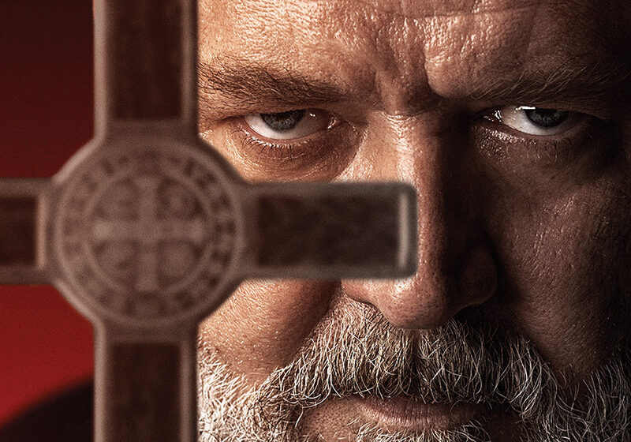
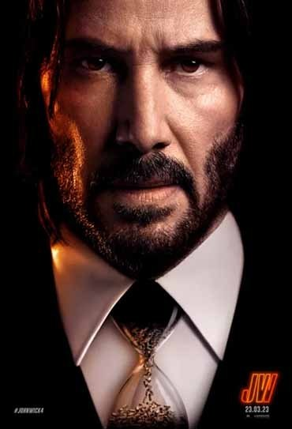

Veja nossas Estréias
O Exorcista do Papa , estrelado por Russell Crowe, assista em breve.
Na quarta-feira (22), O Exorcista do Papa ganhou o seu primeiro trailer. No vídeo, é possível ver Russell Crowe como protagonista do filme de terror inspirado nos relatos reais do Padre Gabriele Amorth, o ex-exorcista Chefe do Vaticano, que faleceu em 2016, aos 91 anos, somando mais de 100 mil exorcismos em sua vida.
Nas cenas, Crowe aparece como Amorth, sacerdote italiano responsável por expulsar os demônios, sob ordens do Papa, e que acaba descobrindo uma conspiração contra a Igreja Católica após exorcizar as forças do mal de um menino.
No elenco, além do vencedor do Oscar, estão Franco Nero, Daniel Zovatto, Alex Essoe, Laurel Marsden, Cornell S. John, Ralph Ineson e Peter De Souza-Feighoney. A direção ficou por conta de Julius Avery. O filme será lançado no dia 6 de abril
John Wick - Baba Yaga
- Duração: 169 min.
- Classificação: 16
- Gênero: Ação , Suspense
- Estreia: 23/03/2023
Sinopse: O assassino profissional John Wick (Keanu Reeves) que estava aposentado precisa continuar sua jornada em busca de vingança. Ele finalmente descobre um caminho para derrotar a Alta Cúpula para que possa finalmente ser livre. No entanto, para isso, deve vencer um novo inimigo com poderosas alianças no mundo inteiro. Nessa trama, antigos amigos podem se tornar inimigos.
Elenco: Keanu Reeves, Laurence Fishburne, Scott Adkins, Hiroyuki Sanad